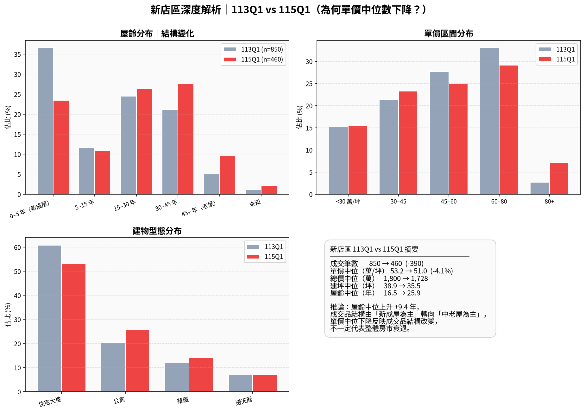
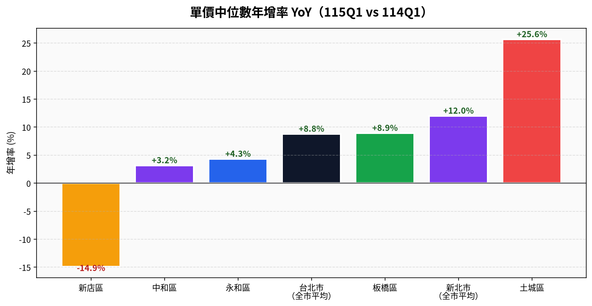
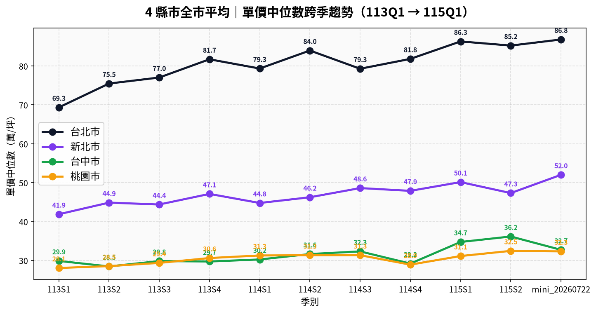
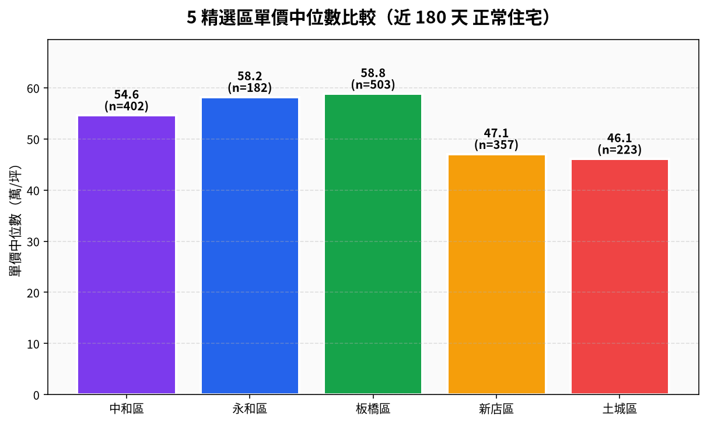
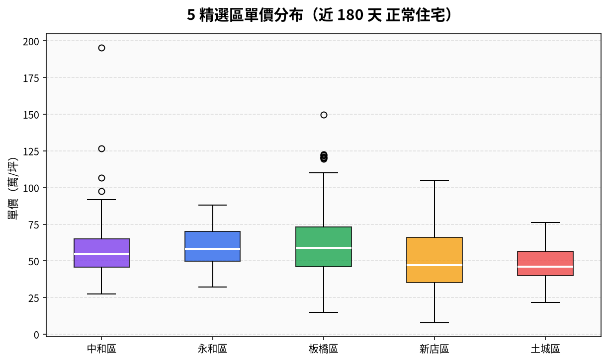
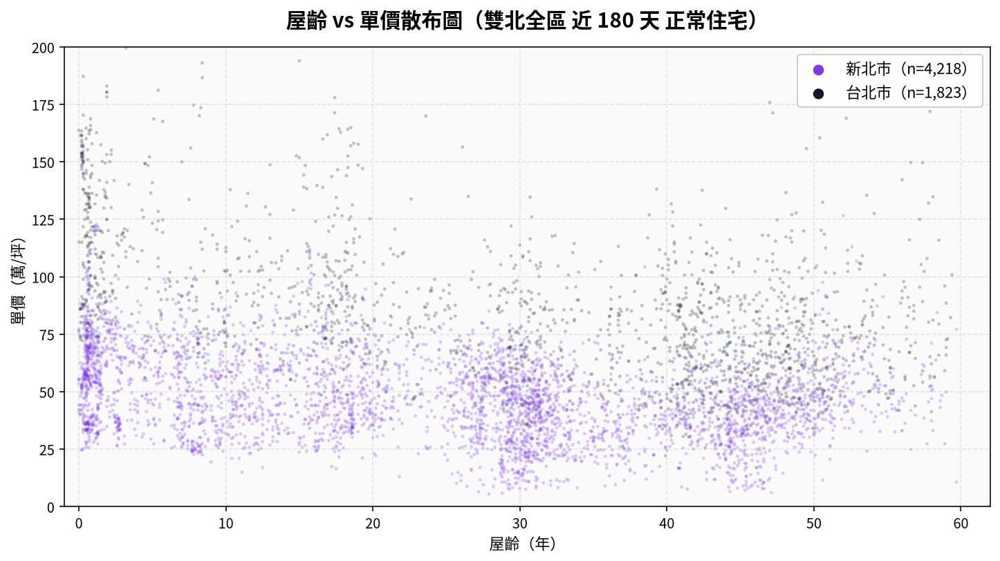
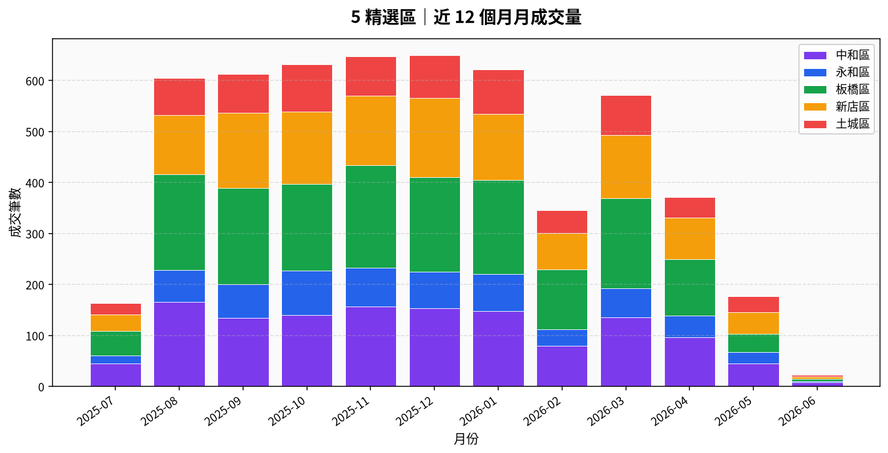
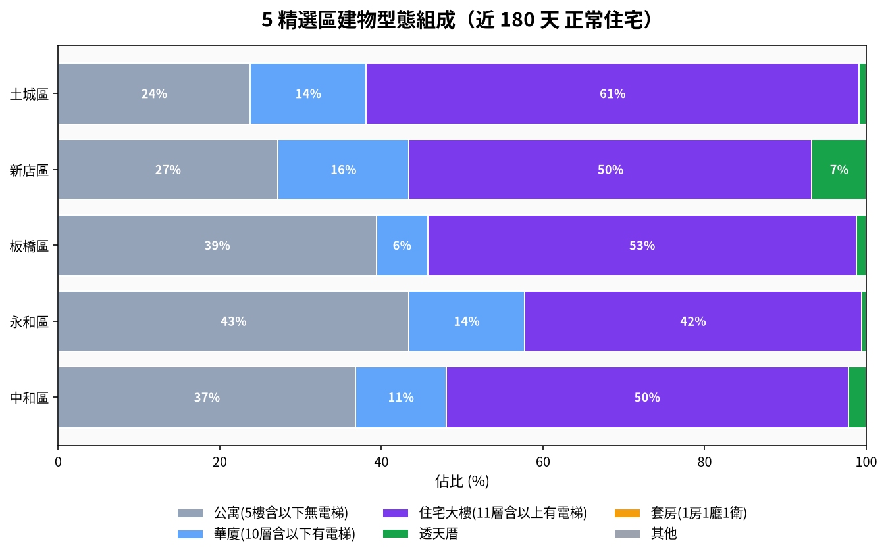

LVR Observatory · 內政部實價登錄
台北市 + 新北市 + 台中市 + 桃園市｜正常住宅成交追蹤
台北、新北、台中、桃園四縣市各行政區的實價登錄「正常住宅」成交：單價中位數、年增率與行政區排名，資料來自內政部開放資料，每月 2、12、22 日自動更新。實價登錄公告有約 30–50 天的申報延遲，判讀行情以 90／180 天窗較穩。
本期實價登錄涵蓋雙北、台中、桃園共77個行政區。市場觀察顯示，台中市與北台灣區域表現分化明顯，台中三區漲幅突破30%，而新北市新店區跌幅居四市之冠，值得注意其結構性調整。本週共有7個行政區年增幅突破±20%警示線。
**漲幅警示**
依資料顯示，年增幅TOP 5中，台中市佔據三席。外埔區以+35.5%領先，單價中位18.8萬/坪；北屯區+32.0%，樣本量達553筆，反映中科、水湳周邊持續吸引買盤；潭子區+31.3%。北市中正區+31.2%，單價中位達125.1萬/坪，樣本126筆；新北土城區+25.6%，則受惠鄰近新北副都心發展。
**跌幅警示**
新店區年跌14.9%，單價中位47.1萬/坪，為四市最大跌幅。西區（台中）-14.6%，士林區（北市）-10.7%。蘆竹區（桃園）-9.7%，跌幅相對溫和。
**結構觀察**
新店區值得深入關注。比較113年Q1與115年Q1數據，成交量從850筆驟降至460筆，跌幅45.9%；單價中位由53.2萬/坪至51.0萬/坪，跌幅4.1%。更顯著的是屋齡中位數從16.5年推升至25.9年，成交品結構改變（新成屋帶量消失、老屋佔比上升），表明單價下降主要為結構性而非市場性因素。
預售屋高端市場集中於北市，大安區188.6萬/坪領先，松山、中山緊隨其後。租金市場方面，烏來區月租2,119元/坪最高，大安區2,112元/坪次之，年化報酬2.41%。
（資料：內政部實價登錄，已排除特殊交易與極端值）
113Q1 → 115Q1 新店區成交筆數從 850 降到 460（-390 筆，成交量縮 45%）， 單價中位數從 53.2 降到 51.0 萬/坪（-4.1%）。 但更關鍵的是 屋齡中位數從 16.5 年 → 25.9 年（+9.4 年）—— 113 期由新成屋（重劃區開案）帶量，115 期新成屋移轉停止，老屋佔比上升，中位數自然回歸老屋常態值。
屋齡分布（左上）：新成屋（0–5 年）佔比從 36% 降到 23%、老屋（45+ 年）從 5% 升到 9%。建物型態（左下）：大樓佔比下降、公寓佔比上升。

綠 = 上漲、紅 = 下跌。新店 -14.9% 看數字大但需結合上方深度解析看（屋齡結構變化所致）。

每點為該季全市正常住宅單價中位數，已排除特殊交易與極端值。

中位數抗極端值，比平均數更能代表「典型成交」。

盒子=中間 50% 區間；線=中位數；點=極端值。

屋齡 0 年附近為新成屋／預售移轉。台北市（深色）整體價位高於新北市（紫色），但新北市新成屋與台北市老公寓部分價位帶有重疊。

堆疊長條反映整體市場活躍度。最近 1~2 個月筆數會因資料延遲偏低。

公寓比例高 = 老舊社區為主；大樓比例高 = 重劃區為主。

樣本 < 30 筆者標「樣本少」；2 年漲幅 = 115Q1 vs 113Q1；1 年漲幅 = 115Q1 vs 114Q1（YoY）。
| 排名▲▼ | 區別▲▼ | 縣市▲▼ | 樣本▲▼ | 單價中位▼ | 總價中位▲▼ | 屋齡中位▲▼ | 1 年漲幅▲▼ | 2 年漲幅▲▼ |
|---|
內政部每月 1、11、21 日公告新資料，本站於每月 2、12、22 日自動同步重建，頁首的「更新於」時間會隨每次重建自動更新。
實價登錄從成交到公告約有 30–50 天的申報與作業延遲，最近一至兩個月的筆數會系統性偏低，屬正常現象，不代表市場急凍。
中位數取排序後的中間值，不會被少數豪宅或極端低價拉動，更能代表一般成交的行情水準；本站排名一律採用中位數。
不行。行政區中位數反映整區樣本，個別物件的屋齡、樓層、臨路與屋況差異很大；實際估值與可貸條件依個案評估，本公司非金融機構，最終核貸由金融機構決定。